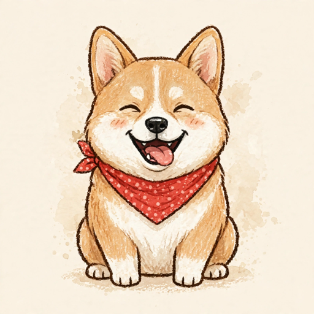
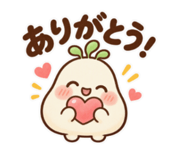

つみかず
小さなWebアプリと、LINEスタンプを作っています。
つみかずについて
「自分が使いたいものを、まず自分で作る」をモットーに、ふだんの暮らしや制作の手伝いになる小さな道具を公開しています。どれもブラウザだけで動くので、インストール不要ですぐ使えます。
作ったアプリやスタンプへのご感想・ご相談は、LINE公式アカウントで受け付けています。
LINE公式アカウント（@380pjkcp）かんがえの木
頭の中のもやもやを、木の枝のように広げて整理する思考ツールです。中心にテーマを置き、思いついたことを枝として足していきます。
- 中心の丸に、考えたいテーマを書く
- 枝を足して、思いつくことを広げていく
- 枝ごとに「◎残す／△保留／✕切る」で判断すると、切った枝は畳まれて、木の中心が少しずつ移動します
データは使っている端末の中にだけ保存されます。サーバーには送られません。
かんがえの木 をひらく思考整理アプリ（無料・登録不要）
暮らしのアプリ
わたし便登録したキーワードのニュースを、開くたび自動で集めるアプリ GoList
行きたい場所をためるリスト。タップでGoogleマップが開きます 小西家（ソロ版）
ニュース・予定・買い物リストをひとつにまとめた、ひとり用の生活アプリ
工房シリーズ（制作お助けアプリ）
イロドリ工房バナー作りのためのカラーツール すけるん工房
スタンプ・イラストの背景を透明にするツール しまう工房
完成した作品を整理してしまう管理ツール
LINEスタンプ
漢字キャラクター「MOJI BEASTS」などのLINEスタンプを販売中です。

MOJI BEASTS

博多弁うりぼう

ぽわり
販売中のスタンプ一覧はこちら